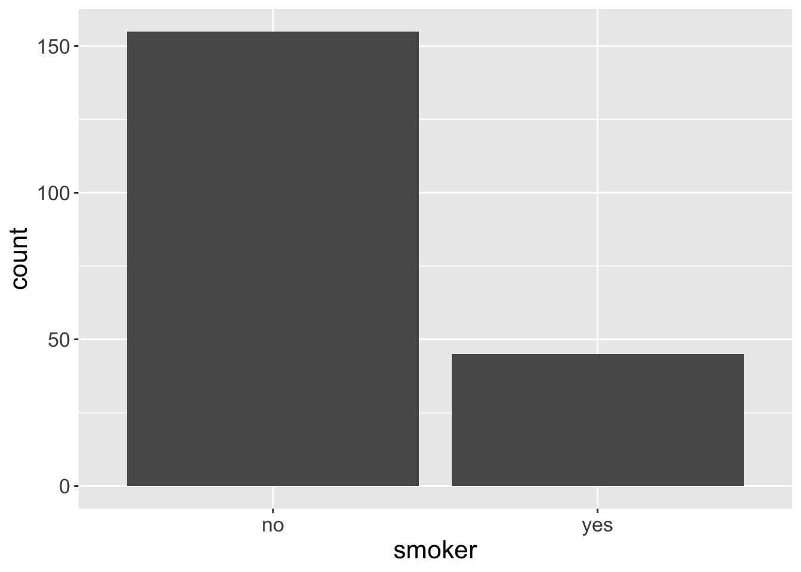
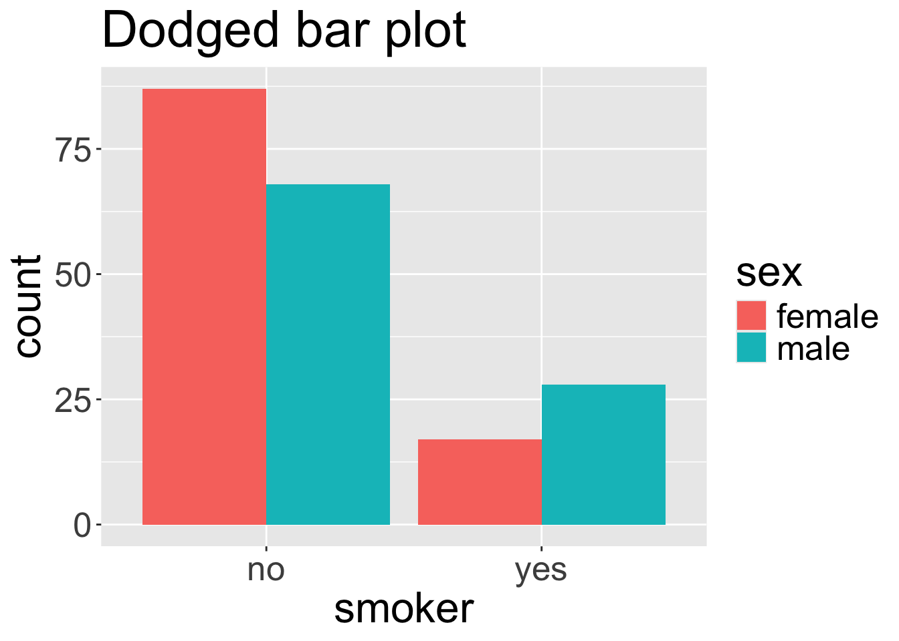
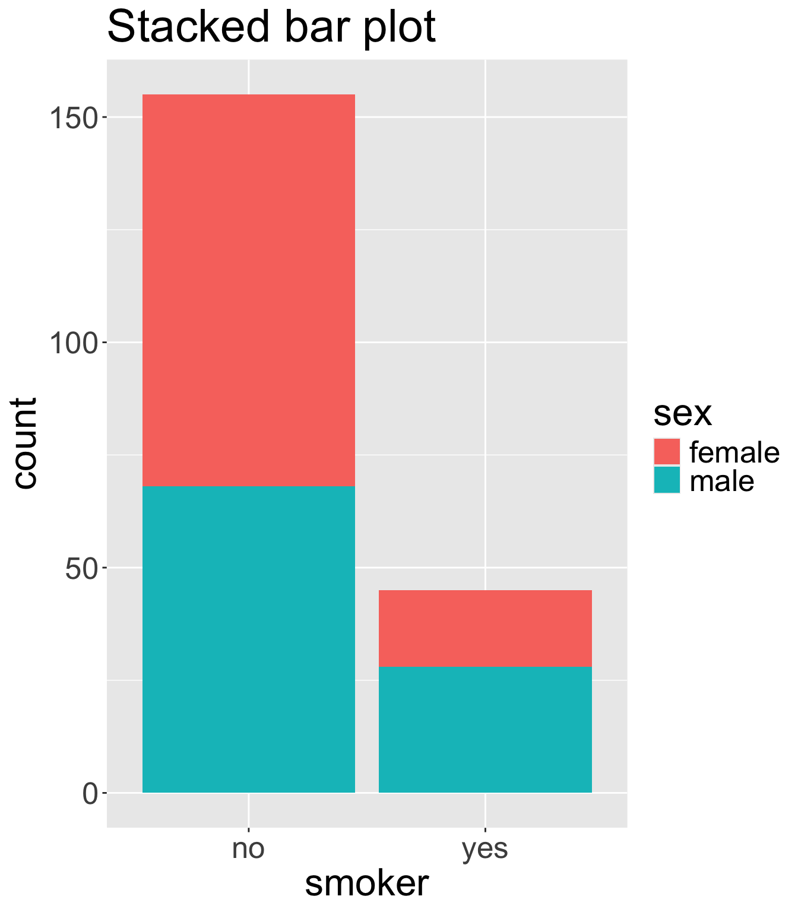
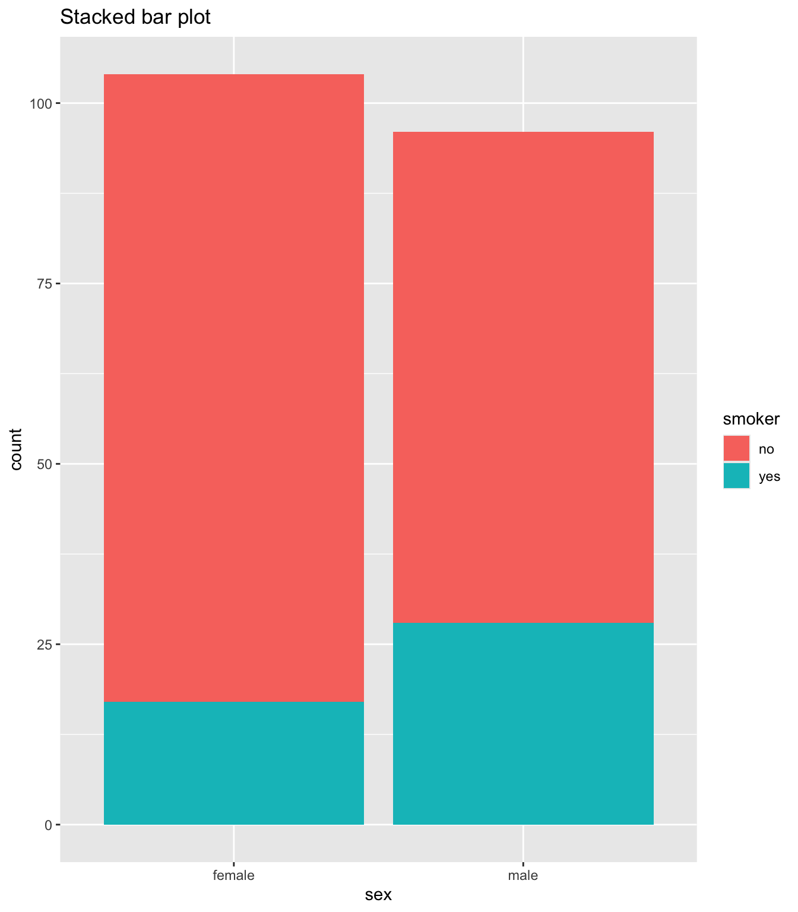
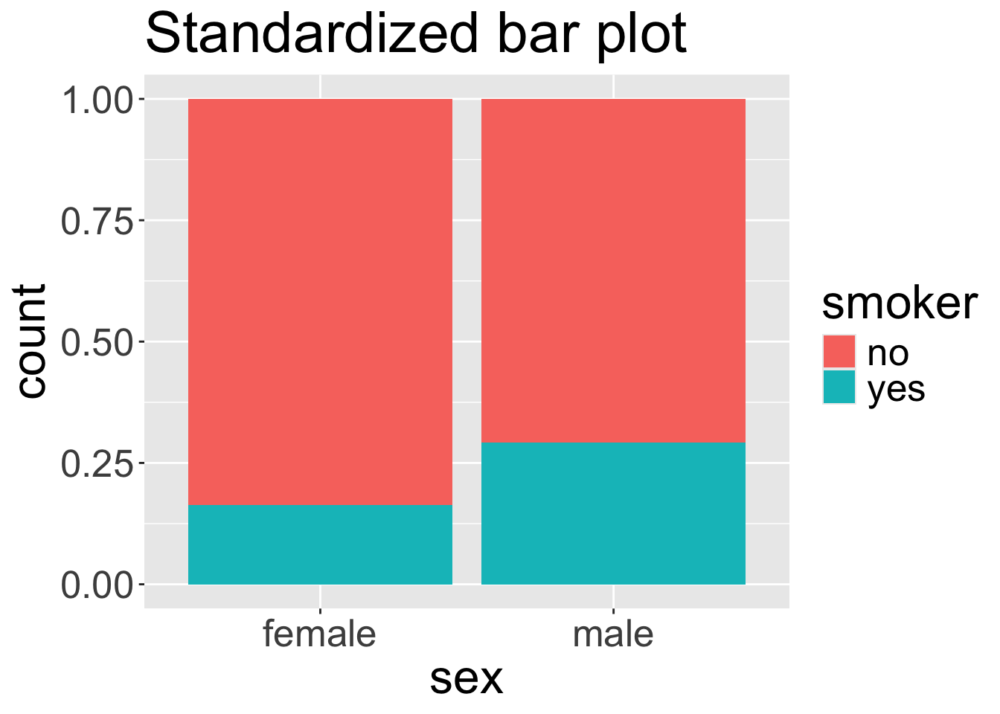
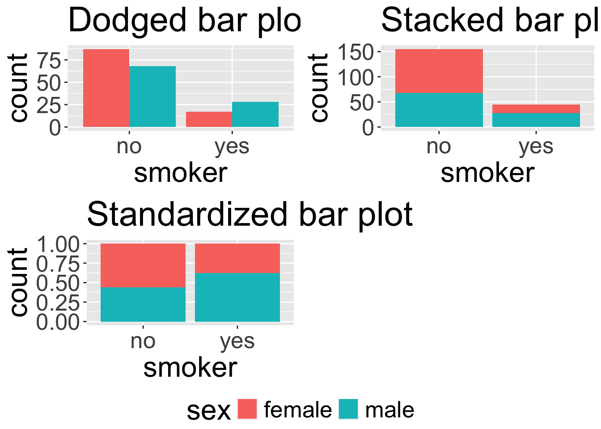

── Attaching core tidyverse packages ──────────────────────── tidyverse 2.0.0 ──
✔ dplyr 1.1.4 ✔ readr 2.1.5
✔ forcats 1.0.0 ✔ stringr 1.5.1
✔ ggplot2 3.5.1 ✔ tibble 3.2.1
✔ lubridate 1.9.3 ✔ tidyr 1.3.1
✔ purrr 1.0.2
── Conflicts ────────────────────────────────────────── tidyverse_conflicts() ──
✖ dplyr::filter() masks stats::filter()
✖ dplyr::lag() masks stats::lag()
ℹ Use the conflicted package (<http://conflicted.r-lib.org/>) to force all conflicts to become errors
Rows: 1338 Columns: 7
── Column specification ────────────────────────────────────────────────────────
Delimiter: ","
chr (3): sex, smoker, region
dbl (4): age, bmi, children, charges
ℹ Use `spec()` to retrieve the full column specification for this data.
ℹ Specify the column types or set `show_col_types = FALSE` to quiet this message.Categorical data
Visualizations and contingency tables
Housekeeping
Categorical data
To visualize the distribution of a categorical variable, we are simple display the counts of different categories/groups/levels within a categorical variable
Looking at your data
Is your data tidy, or do you have a table of counts (i.e. a frequency table)?
# A tibble: 5 × 1
fruit
<chr>
1 apple
2 apple
3 orange
4 apple
5 orange# A tibble: 2 × 2
fruit number
<chr> <dbl>
1 apple 3
2 orange 2Univariate visualizations
If we are interested in visualizing the distribution of a single categorical variable, it is common to use a barplot, where the different levels are displayed on ones axis and the counts of each level are portrayed on the the other axis.
# A tibble: 2 × 2
smoker n
<chr> <int>
1 no 155
2 yes 45
Contingency tables
Perhaps we are interested in examining the distribution of two categorical variables at the same time
We can summarize the distribution using a two-way table of counts known as a contingency table, where each value in the table count the number of times a particular combination of variable 1 and variable 2 outcomes/levels occurred
`summarise()` has grouped output by 'smoker'. You can override using the `.groups` argument.Contingency table smoker female male no 87 68 yes 17 28 - Note: can easily obtain the distribution of just one of the variables by looking row-wise or column-wise
We essentially convert the contingency table to a visualization to visualize the distribution of two categorical variables
Dodged bar plot
The dodged bar plot directly converts the contingency table to a visualization.
| smoker | female | male |
|---|---|---|
| no | 87 | 68 |
| yes | 17 | 28 |

Stacked bar plot
The stacked bar plot looks at the counts either row-wise or column-wise.
| smoker | female | male |
|---|---|---|
| no | 87 | 68 |
| yes | 17 | 28 |


Proportions
To obtain our final bar plot, we must first convert to the contingency table to proportions row-wise or column-wise to obtain the fractional breakdown of one variable in another. In the following, we obtain row proportions:
| smoker | female | male |
|---|---|---|
| no | 87 | 68 |
| yes | 17 | 28 |
`summarise()` has grouped output by 'smoker'. You can override using the
`.groups` argument.| smoker | female | male |
|---|---|---|
| no | 0.561 | 0.439 |
| yes | 0.378 | 0.622 |
- What does the quantity 0.378 represent?
- If we take the proportions row-wise, does each row need to sum to 1?
- If we take the proportions row-wise, does each column need to sum to 1?
Proportions (cont.)
Set-up how you would find the column-wise proportions using this contingency table
| smoker | female | male |
|---|---|---|
| no | 87 | 68 |
| yes | 17 | 28 |
Standardized bar plot
The standardized bar plot visualizes the row-wise or column-wise proportions.

Choosing a bar plot
- Using any of the plots below, do you believe the smoker status and sex are associated?
- When might you prefer to use the stacked, dodged, or standardized bar plot?
